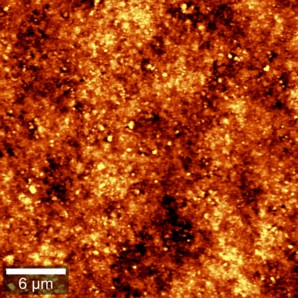
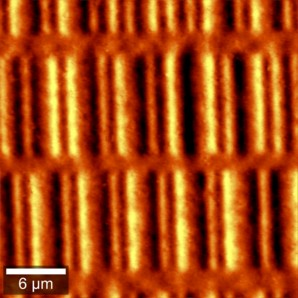

|
参考样品
|


图 1：软盘的形貌（左）和 MFM（右）图像
除了商业MFM样品外，软盘或硬盘盘片的一部分也是测试和练习MFM的良好样品。图1中的MFM图像显示了不同磁道上的单个位。
表 1：上述测量的示例参数
|
参数 |
数值 |
|
尺寸 [µm] |
30 x 30 |
|
像素 |
512 x 512 |
|
每行时间 [s] |
1 |
|
Z 偏移 [nm] |
200 |
|
前瞻 [%] |
0 |
对于MFM，需要较大的Z偏移量才能看到对比度，并使探针真正脱离样品表面。